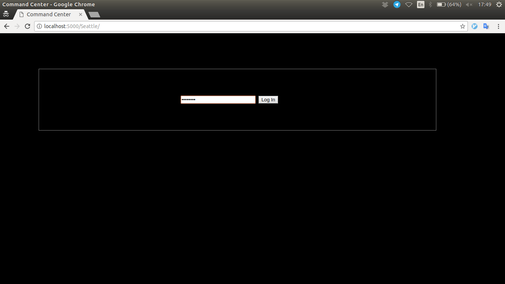
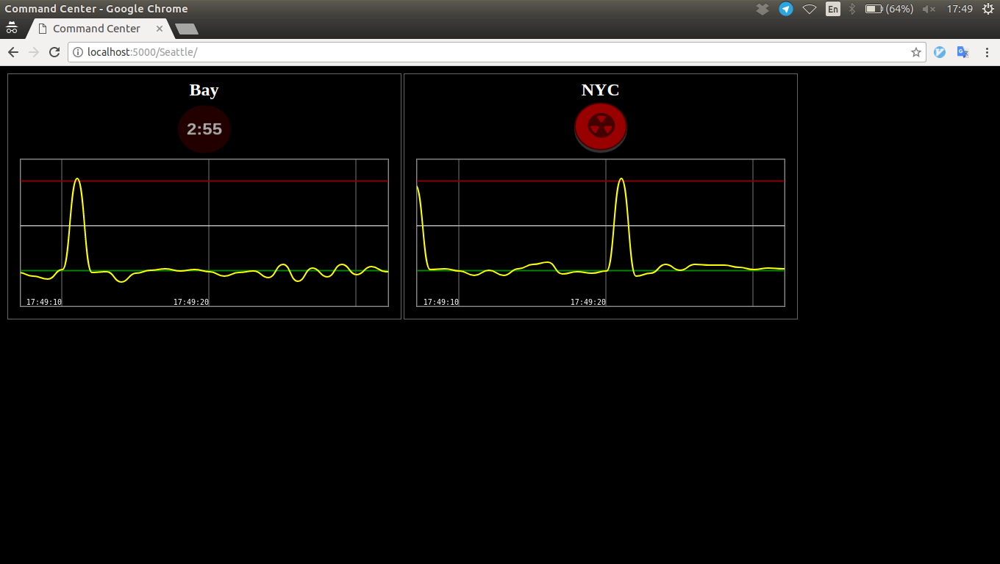

Nuclear Monitoring and Control Instructional Supplement
This document is meant as a brief high-level overview of the interface for the Argus Nuclear Monitoring and Control System.
-
At the beginning of your shift, the site engineer will give you the URL and login credentials for the monitoring station:
Show image
(This password is your only authentication mechanism: keep tight hold of it.)
-
The monitoring station has one section for each enemy power, consisting of a launch button and a readout from the early warning system:
Show image

The EWS works essentially by radar: sending out a pulse of radiation every second, and analyzing the echoes. There are occasional false positives, visible above, due to the anti-detection measures we suspect the enemy's missiles are equipped with.
-
If it is clear that another power has lauched at us, you are to retaliate immediately by pressing the launch button:
Show image
Our missiles will take about three minutes to reach them: the countdown shows the estimated time until impact.
-
Our spies tell us that their monitoring tech (shown here on the right) is remarkably similar to ours, likely a result of their shameless espionage:
Show image

As you see, after about a minute, they'll have a pretty good idea that you've launched...
-
...and after about two minutes it will be unmistakeable:
Show image

-
When an enemy power has been eliminated, either by us or by another, a reverse countdown will show -- it's possible that, in their expiring moments, they will have launched at us. There's nothing to be done at this point but wait.
Show image

-
With luck, they will have written off our launch as a malfunction until it was too late; when it's been long enough that we're sure we're safe, their EWS will deactivate.
Show image